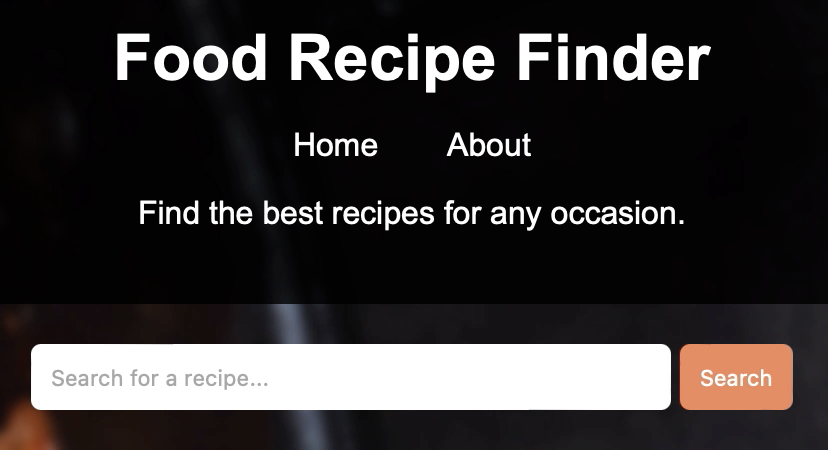
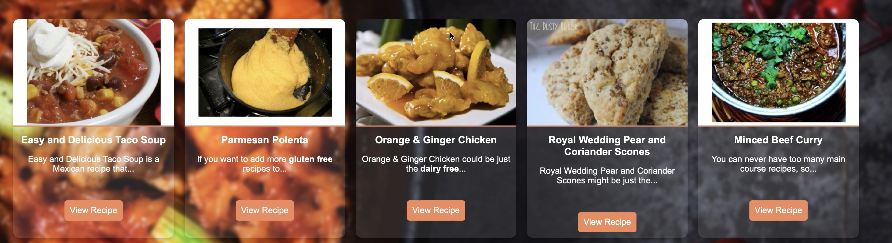

Key Features

Control Panel with Search Bar
Our control panel provides a user-friendly search bar that allows you to quickly find recipes. Simply type in the ingredients you have or the dish you want to prepare, and get instant results.

Most Popular Recipes
Discover the most popular recipes among our users. This feature highlights the recipes that are trending and most loved, making it easy for you to try out the best dishes.

Recipe Content Display
Get detailed content for each recipe, including step-by-step instructions, ingredient lists, and cooking tips. This feature ensures you have all the information you need to cook delicious meals with confidence.